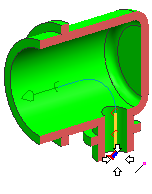
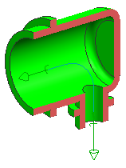

Create the fixture port on the backshell
-
Right-click the Fixture node and choose New to open the Fixture Port dialog box.
-
Make sure the Filter is still set to Point.
-
Use
 to select the lower end point of the sketch curve.
to select the lower end point of the sketch curve.

-
Click the middle mouse button to advance to the Align Vector step. Make sure that the port vector arrow points away from the center of the part. If it does not, click Cycle Direction.
You do not want the spline path to bend as it enters the side of the backshell.
-
In the Extension box, type 13.
-
点击确定。

-
Click OK in the Qualify Part dialog box.
-
Click Clip Work Section
 .
.

-
Close the part without saving.